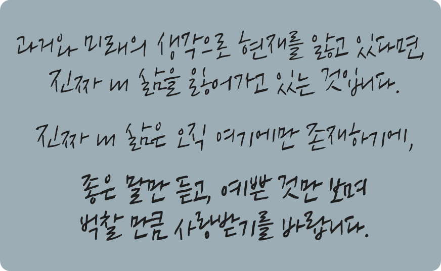

<!DOCTYPE html>
<html>
<head>
    <meta charset="UTF-8">
    <meta name="viewport" content="width=device-width, initial-scale=1.0, maximum-scale=1.0, minimum-scale=1.0, user-scalable=no">
    <link rel="stylesheet" href="css/bootstrap/bootstrap.min.css">
    <link rel="stylesheet" href="css/sleep.css">
    <link rel="shortcut icon" href="images/favicon.png" type="image/x-icon">
    <title>The Starry Night</title>
</head>
<body>
<div id="bg">
    <!-- div 하나밖에 없는데 footer를 왜 넣은 거야 이거랑 dream 수정 -->
    <!-- 그리고 ment 애니메이션 넣으면 읽기 힘드니까 다른 거로 애니메이션 넣고 멘트껀 지우셈 -->
    <div class="footer">
        
        
        
        
    </div>
    <script src="https://ajax.googleapis.com/ajax/libs/jquery/1.12.4/jquery.min.js"></script>
    <script type="text/javascript" src="js/bootstrap/bootstrap.min.js"></script>
    <script type="text/javascript" src="js/sleep.js"></script>
</div>
</body>
</html>